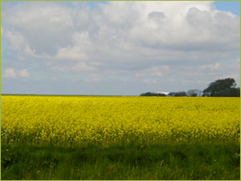

|
The EU has a high ambition regarding the use of biomass as source of energy.
In Eururalis 2.0 two policy options have been implemented:
- No targets for the use of biomass in 2010 or later
- A target of 5.75% biofuels for transport, 75 million tons
of oil equivalent of biomass for heating and 174 TWh of electricity
produced with biomass, upto 2010 and the following years.
The EU perceives an increase in the use of biofuels as one of the ways
to reduce the emission of CO2,
and therefore as a way to fulfil the obligation of the Kyoto protocol.
|
 |